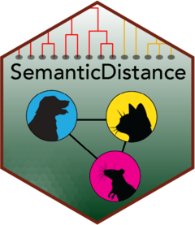

SemanticDistance Dialogues
Jamie Reilly, Hannah R. Mechtenberg, Emily B. Myers, Jonathan E. Peelle
2026-01-18
Source:vignettes/SemanticDistance_Dialogues.Rmd
SemanticDistance_Dialogues.RmdDialogues
This could be a conversation transcript or any language sample where you care about talker/interlocutor information (e.g., computing semantic distance across turns in a conversation). Your dataframe should nominally contain a text column and a speaker/talker column.
sample dialogue transcript included in the package
| text | speaker |
|---|---|
| Hi Peter. It’s nice to see you | Mary |
| Hi Mary. Hot out today | Peter |
| It sure is. | Mary |
| Did you read that book? | Peter |
| No I haven’t had time. | Mary |
Step 1: Clean Dialogue Transcript (clean_dialogue)
Decide on your cleaning parameters (e.g., stopwords? lemmatization?).
Specify these in the argument(s) to your function calls.
Arguments to clean_dialogue() are:dat
your raw dataframe with at least one column of text AND a talker column
wordcol column name (quoted) containing the text you
want cleaned who_talk column name (quoted) containing
the talker ID (will convert to factor) omit_stops
omits stopwords, T/F default is TRUE lemmatize
transforms raw word to lemmatized form, T/F default is TRUE
Dialogue_Cleaned <- clean_dialogue(dat=Dialogue_Typical, wordcol="text", who_talking="speaker", omit_stops=TRUE, lemmatize=TRUE)
knitr::kable(head(Dialogue_Cleaned, 12), format = "pipe")| id_row_orig | text_initialsplit | speaker | word_clean | id_row_postsplit | turn_count |
|---|---|---|---|---|---|
| 1 | hi | Mary | NA | 1 | 1 |
| 1 | peter | Mary | peter | 2 | 1 |
| 1 | its | Mary | NA | 3 | 1 |
| 1 | its | Mary | NA | 4 | 1 |
| 1 | nice | Mary | nice | 5 | 1 |
| 1 | to | Mary | NA | 6 | 1 |
| 1 | see | Mary | see | 7 | 1 |
| 1 | you | Mary | NA | 8 | 1 |
| 2 | hi | Peter | NA | 9 | 2 |
| 2 | mary | Peter | mary | 10 | 2 |
| 2 | hot | Peter | hot | 11 | 2 |
| 2 | out | Peter | out | 12 | 2 |
Dialogue Distance Turn-to-Turn (dist_dialogue)
Averages the semantic vectors for all content words in a turn then
computes the cosine distance to the average of the semantic vectors of
the content words in the subsequent turn. Note: this function only works
on dialogue samples marked by a talker variable (e.g., conversation
transcripts). It averages across the semantic vectors of all words
within a turn and then computes cosine distance to all the words in the
next turn. You just need to feed it a transcript formatted with
clean_dialogue. ‘dist_dialogue’ will return a summary dataframe that
distance values aggregated by talker and turn (id_turn). Arguments to
dist_dialogue are: dat = dataframe w/ a
dialogue sample cleaned and prepped using ‘clean_dialogue’
DialogueDists <- dist_dialogue(dat=Dialogue_Cleaned, who_talking="speaker")
knitr::kable(head(DialogueDists, 12), format = "pipe", digits=2)| turn_count | speaker | n_words | glo_cosdist | sd15_cosdist |
|---|---|---|---|---|
| 1 | Mary | 3 | 0.83 | 0.58 |
| 2 | Peter | 4 | 0.85 | 0.58 |
| 3 | Mary | 1 | 0.86 | 0.58 |
| 4 | Peter | 3 | 0.86 | 0.45 |
| 5 | Mary | 5 | NA | NA |